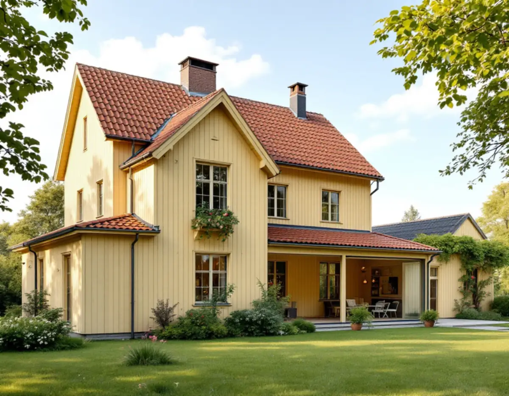
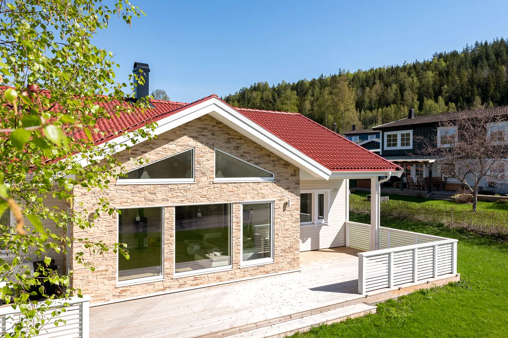
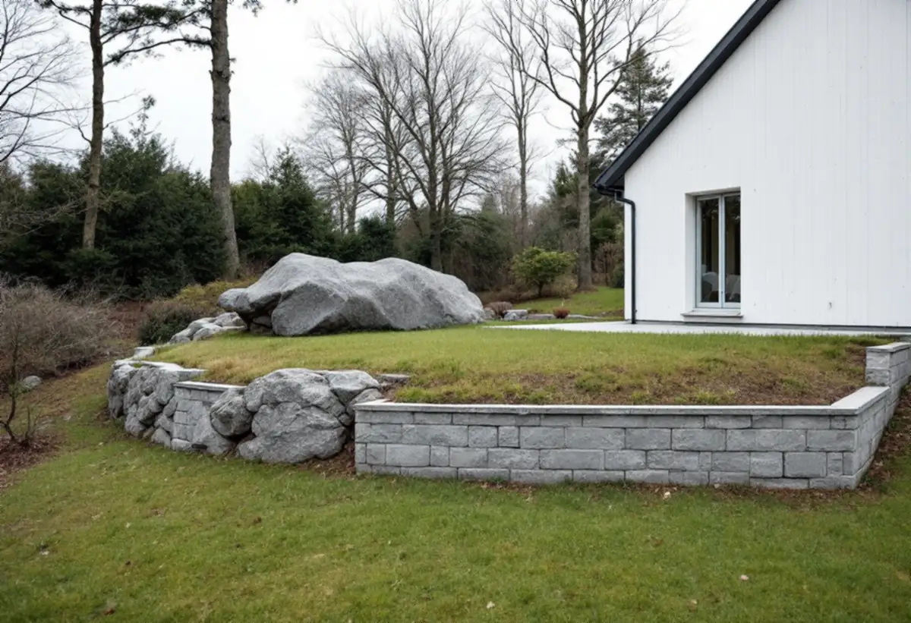

Planen
Detaljplanens byggrätt och Stadsmuseets klassificering för fastigheten.
I Älvsjös villastäder finns äldre planer som ger stora byggrätter, men också en grön karaktär som staden vill behålla. En tillbyggnad som passar in handlar därför lika mycket om var och hur den placeras som om hur stor den blir. Geal Entreprenad AB bygger till villor i hela Älvsjö och börjar med planen och tomten.

Stadens skrift Varsam utveckling av småhus- och villaområden nämner Älvsjö, Herrängen, Långsjö och Långbro bland villastäderna med äldre stadsplaner som tillåter generösa byggrätter. Den påpekar att det i regel finns en detaljplan som reglerar hur mycket du får bygga, var och hur högt, och att ett första steg är att stämma av det du vill göra mot den. Ryms tillbyggnaden i planen söker du bygglov enligt planen.
Vill du bygga till utan bygglov gäller lagens regel: högst 30,0 kvadratmeter bruttoarea eller öppenarea, inte högre än husets taknock och sammanlagt 30,0 kvadratmeter med tidigare lovfria tillbyggnader. Staden räknar upp friggebodsskärmtak, attefallstillbyggnader och attefallstakkupor som exempel på sådant som ska räknas in. För ett en- eller tvåbostadshus får den lovfria tillbyggnaden strida mot detaljplanen och alltså placeras på prickmark.

För villastäderna skriver staden att det vanligaste är att orientera tillbyggnader in mot tomten, i den privata zonen på trädgårdssidan, och att undvika tillbyggnader mot gatan. Ligger huset fritt på tomten med trädgården mot gatan kan en tillbyggnad mot gaturummet fungera utan att gatan påverkas negativt.
Skriften visar båda fallen: en villa långt in på tomten där tillbyggnaden mot gatan samspelar med huset, och en villa nära gatan där tillbyggnaden mot trädgården underordnar sig huvudbyggnaden. Villastäderna planerades med husen indragna från gatan och en grön förgård mellan hus och gata, och gatorna kantades av klippta häckar eller staket. Staden vill också att flera utfarter intill varandra och stora sammanhängande parkeringsytor undviks. Vi tittar på hur ditt hus och grannarnas står mot gatan innan vi föreslår en placering.
Staden råder dig att utgå från de ursprungliga husens volym, proportioner och takformer när du bygger till. Ett nytt tillägg behöver inte kopiera huset. Det kan ha samma volym och form som området men ett nytt, väl gestaltat material, eller avvika i form men ha de karaktärsskapande materialen, kulörerna och detaljerna. Skriften påpekar att det många gånger är klokt att ta hjälp av en sakkunnig, till exempel arkitekt eller byggnadsantikvarie.
Påverkar tillbyggnaden husets bärande konstruktion eller brandskydd behöver du göra en anmälan och vänta på startbesked, skriver staden. Detsamma gäller om du installerar eldstad, vatten eller avlopp i tillbyggnaden. Vi ser till att anslutningen mot det befintliga taket och stommen är utredd innan något rivs upp.
Villastadens gröna karaktär är det som håller ihop områdena, enligt staden. Förändringar av marknivån behöver göras med omsorg om befintlig vegetation, berghällar och stödmurar, och gröna ytor bör inte hårdgöras så att dagvattenhanteringen försämras. Dagvattnet ska tas om hand inom den egna fastigheten.
Därför ritar vi tillbyggnadens grund efter tomtens nivåer och planerar var regnvattnet från det nya taket ska ta vägen. Ska tillbyggnaden närmare gränsen än 4,5 meter behövs grannens skriftliga medgivande. Mot gata och park är kommunen oftast huvudman, och då går förfrågan skriftligt till stadsbyggnadskontoret. Om större byggprojekt i Älvsjö kan du läsa under byggföretag i Älvsjö och om altaner och snickeri under snickare i Älvsjö.

Detaljplanens byggrätt och Stadsmuseets klassificering för fastigheten.
Husets placering, trädgårdssidan, marknivåer och träd.
Volym, takform och material utgår från huset.
Arbete, material och lovhandlingar står var för sig.
Bygglov enligt planen, lovfritt med anmälan eller frivilligt lov.
Grund, stomme, tak och anslutningen mot huset.
Rotavdraget är högst 30 procent av arbetskostnaden, högst 50 000 kronor per person och år och högst 75 000 kronor tillsammans med rutavdrag. Material och resor ger inget avdrag.
Skatteverket godkänner en tillbyggnad av ett småhus om någon av tillbyggnadens sidor sitter ihop med husets yttervägg till minst 75 procent, eller om det finns en dörr emellan. Bostaden ska vara äldre än fem år och större delen av den ursprungliga stommen ska behållas. Bygglovshandlingar och arkitekt ger inget avdrag. Geal drar avdraget direkt på fakturan där det gäller.
Tillbyggnadens storlek, grunden på en kuperad tomt, hur taket ska anslutas, valet av material och om bygglov behövs. Efter ett gratis platsbesök får du ett skriftligt kostnadsförslag.
Mer boyta i samma hus.
Tillbyggnad →Takbyte, takbesiktning och plåtarbeten.
Takläggare i Älvsjö →Långbro, Herrängen och Långsjö.
Takrenovering i Älvsjö →Villatomten, prickmarken och vattnet.
Attefallshus i Älvsjö →Villorna, träbjälklaget och golvvärmen.
Badrumsrenovering i Älvsjö →Byggrätt, gamla planer och planändring.
Byggföretag i Älvsjö →Villastad, nya grannhus och puts på trä.
Fasadrenovering i Älvsjö →Småspröjs och fönsterluckor.
Fönsterrenovering i Älvsjö →Golvvärme under trägolv i äldre villor.
Golvläggare i Älvsjö →Slipa och ge golvet en ny kulör.
Golvslipning i Älvsjö →Villastad, flerlägenhetsvillor och kök i lager.
Köksrenovering i Älvsjö →Villastad, egnahem och småstugor i Älvsjö.
Målare i Älvsjö →Plåttak för solceller, kupor och verandor i Älvsjö.
Plåtslagare i Älvsjö →Staket, grind och plank i villastaden.
Snickare i Älvsjö →Vinden, kupan och byggrätten.
Takbyte i Älvsjö →Bårder och dekor i villastaden.
Tapetsering i Älvsjö →